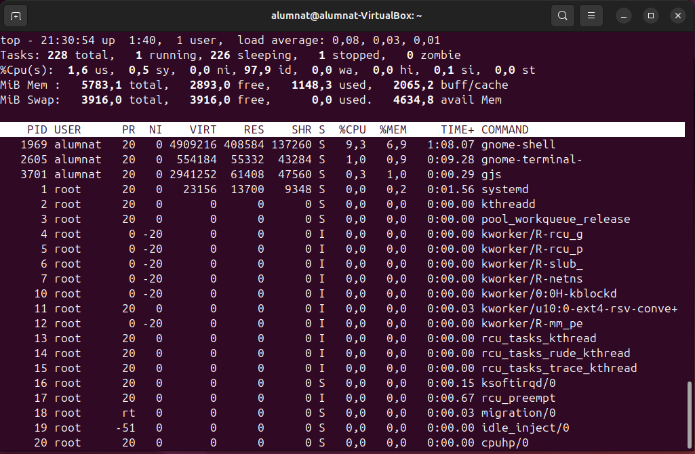

Gestió de procesos
Què és un procés?
Un procés és un programa en execució que inclou:
- Codi del programa.
- Recursos assignats (memòria, fitxers oberts, etc.).
- Execució en un o més fils (threads).
Tipus de processos:
- En primer pla: Interactuen amb l'usuari a la terminal.
- En segon pla: Funcionen sense interferir directament amb l'usuari.
Comanda top
Mostra en temps real els processos actius.
Informació mostrada:
- PID: Identificador del procés.
- USER: Usuari que va iniciar el procés.
- %CPU: Percentatge d'ús del processador.
- %MEM: Percentatge d'ús de la memòria RAM.
- COMMAND: Nom del procés.

Si premem la tecla k i introduim el nombre de proces que volem apagar, aquest procés s'apagarà.
htop
Htop es bàsicament el mateix que top, però més user friendly per a les persones que no estan gaire acostumbrades. És més cómode i és mes agradable visualment
Per instal·lar-lo utilitzarem la següent comanda:
sudo apt install htop

Senyals de processos
Els senyals permeten interactuar amb els processos, com tancar-los, pausar-los o reprendre'ls. Alguns senyals comuns:
- SIGTERM (15): Sol·licita que el procés acabi de manera ordenada.
- SIGKILL (9): Força la terminació immediata del procés.
- SIGSTOP (19): Pausa el procés sense matar-lo.
- SIGCONT (18): Reprèn un procés pausat.
Matar i gestionar processos
- La comanda
kill: Permet enviar senyals als processos per finalitzar-los o gestionar el seu estat.- kill
: Envia un senyal de terminació. - kill -9
: Força la terminació immediata (SIGKILL).
- kill
- Comanda
pkill: Permet matar processos per nom. - Comanda
killall: Mata tots els processos amb un mateix nom.
Gestió de processos amb Ctrl+C i Ctrl+Z
- Ctrl+C: Finalitza immediatament el procés en primer pla.
- Ctrl+Z: Pausa el procés en primer pla i el mou al segon pla (estat "Aturat").
Processos zombies
Un procés zombi és un procés que ha finalitzat però encara ocupa una entrada a la taula de processos perquè el seu procés pare no ha recollit el seu codi de sortida.
Identificar-los: Utilitza ps aux | grep Z per veure els processos zombies.
Matar-los: Utilitza kill